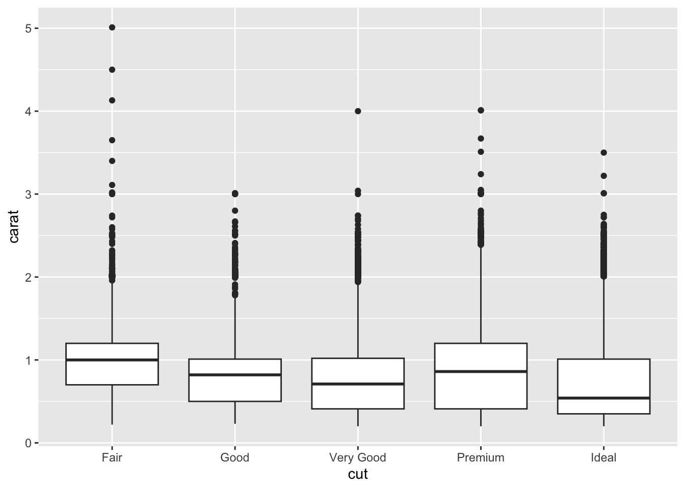

Kapitel 13 Korrelation
Als möglichen Hypothesentest schauen wir uns die Korrelationen an:
Bei einem Korrelationstest wird die Beziehung zwischen zwei Variablen auf einer Verhältnis- oder Intervallskala untersucht: z. B. Größe und Gewicht oder Einkommen und Selbstvertrauen
Die Teststatistik bei einem Korrelationstest wird als Korrelationskoeffizient bezeichnet und durch den Buchstaben \(r\) dargestellt.
Der Koeffizient kann zwischen -1 und +1 liegen, wobei -1 für eine starke negative Beziehung und +1 für eine starke positive Beziehung steht.

13.1 Hypothesen
data <- rnorm_multi(n = 100,
mu = c(100, 8),
sd = c(25, 2),
r = c(0.69),
varnames = c("Konzentration", "Schlaf"),
empirical = FALSE)Die Korrelation prüft als Signifikanztest, ob ein Zusammenhang zwischen 2 Variablen besteht.
Da Korrelationskoeffizient von 0 bedeutet, dass kein Zusammenhang zwischen den Variablen besteht, wird im Signifikanztest i.d.R. \(r\) gegen 0 getestet (daher Nullhypothese).
Folgende Hypothesen sind denkbar:
Test auf Zusammenhang zwischen den beiden Variablen (ungerichtet):
- \(H_0\): \(r = 0\)
- \(H_1\): \(r \neq 0\)
Test auf positiven/negativen Zusammenhang zwischen den beiden Variablen (gerichtet):
- \(H_0\): \(r \leq 0\)
- \(H_1\): \(r > 0\)
beziehungsweise…
- \(H_0\): \(r \geq 0\)
- \(H_1\): \(r < 0\)
Eine typische psychologische Fragestellung für eine Zusammenhangshypothese könnte sein, ob die Anzahl der in der Nacht geschlafenen Stunden (Schlaf) mit der Leistung in einem Konzentrationstest zusammenhängt (Konzentration).
Ein entsprechender Datensatz könnte wie folgt aussehen (die ersten 6 Zeilen von \(N=100)\):
head(data)## Konzentration Schlaf
## 1 82.07757 5.643213
## 2 84.08198 7.799568
## 3 88.27724 5.963639
## 4 109.50052 7.854178
## 5 78.37703 6.655335
## 6 111.30281 8.314313Um einen ersten Eindruck vom Zusammenhang zu gewinnen, können wir uns die Daten in einem Streudiagramm darstellen:
ggplot(data = data, aes(x = Schlaf, y = Konzentration)) +
geom_point() +
geom_smooth(method = "lm")
13.2 Berechnung der Korrelation
Der Korrelationskoeffizient lässt sich mit der R-Basisfunktion cor() berechnen.
Dafür schreiben wir ganz einfach die beiden zu korrelierenden Variablen nebeneinander in die Funktion:
cor(data$Konzentration, data$Schlaf)## [1] 0.7445515Wie Sie sehen, erhalten wir einen Korrelationskoeffizienten von \(r=0.74\). Also einen positiven Zusammenhang.
13.3 Unterschiedliche Korrelationsmethoden
13.3.1 Pearson-Korrelation
Nutzen wir die cor() Funktion ohne weitere Spezifikationen, wird der sogenannte Pearson Korrelationskoeffizient berechnet.
Dieser stellt jedoch gewisse Voraussetzungen an die Daten:
- Intervallskalenniveau
- keine Ausreißer
- Normalverteilung der Variablen
Sollte eine (oder mehrere) der Voraussetzungen nicht erfüllt sein, berechnen wir einen der folgenden alternativen Korrelationskoeffizienten
13.3.2 Spearman-Korrelation (aka Rangkorrelation)
Der Spearman Korrelationskoeffizient funktioniert im Wesentlichen wie der Pearson Korrelationskoeffizient, jedoch wird er auf Ordinalskalenniveau berechnet.
Das macht ihn unempfindlicher gegenüber Verteilungsverletzungen und Ausreißern.
Die Berechnung des Spearman Korrelationskoeffizienten erfolgt nach derselben Methode, mit einer kleinen Spezifikation:
cor(data$Konzentration, data$Schlaf, method = "spearman")## [1] 0.710207In der Regel ist die Abweichung der beiden Korrelationskoeffizienten voneinander nicht allzu hoch.
13.3.3 Kendall-Korrelation
Die Rangkorrelationskoeffizienten von Spearman und Kendall sind beide Koeffizienten, die den Zusammenhang ordinalskalierter Merkmale beschreiben können.
Der Vorteil des Kendall \(τ\) liegt darin, dass seine Verteilung bei kleineren Stichprobenumfängen bessere statistische Eigenschaften bietet und er weniger empfindlich gegen Ausreißer-Rangpaare ist.
cor(data$Konzentration, data$Schlaf, method = "kendall")## [1] 0.529292913.4 Korrelation als Hypothesentest
Wie Sie bereits bemerkt haben werden, liefert Ihnen die cor() Funktion lediglich den Korrelationskoeffizienten, jedoch keine Informationen über statistische Signifikanz.
Ein Signifikanztest für den Korrelationskoeffizienten lässt sich jedoch einfach mit der Funktion cor.test() rechnen. Die Argumente der Funktion sind in der folgenden Tabelle zusammengefasst:
| Argument | Description |
|---|---|
formula |
Argument in Formelformat ~ x + y, x und y sind die Namen der Variablen deren bivariater Zusammenhang getestet werden soll. Diese Variablen sollten in getrennten Spalten eines dataframes stehen. |
data |
Der data.frame, der x und y enthält |
alternative |
Hier kann die Richtung der Alternativhypothese angegeben werden. Wählen Sie "two.sided" für eine ungerichtete Hypothese, oder "greater" bzw. “less" für eine gerichtete Hypothese. |
method |
Gibt die Art des zu berechnenden Korrelationskoeffizienten an. "pearson" (default) steht für die Produkt-Moment Korrelation, "kendall" und "spearman" stehen für die Rangkorrelatioinen nach Kendall und Spearman. |
subset |
Hier kann direkt ein Teildatensatz ausgewählt werden. Z.B.; subset = sex == "female" |
Wenn wir zum Beispiel testen wollten, ob ein signifikanter negativer Zusammenhang zwischen Konzentration und Schlaf besteht, könnten wir das mit folgendem Signifikanztest prüfen:
cor.test(data$Konzentration, data$Schlaf, method = "pearson", alternative = "less")##
## Pearson's product-moment correlation
##
## data: data$Konzentration and data$Schlaf
## t = 11.041, df = 98, p-value = 1
## alternative hypothesis: true correlation is less than 0
## 95 percent confidence interval:
## -1.000000 0.810205
## sample estimates:
## cor
## 0.7445515